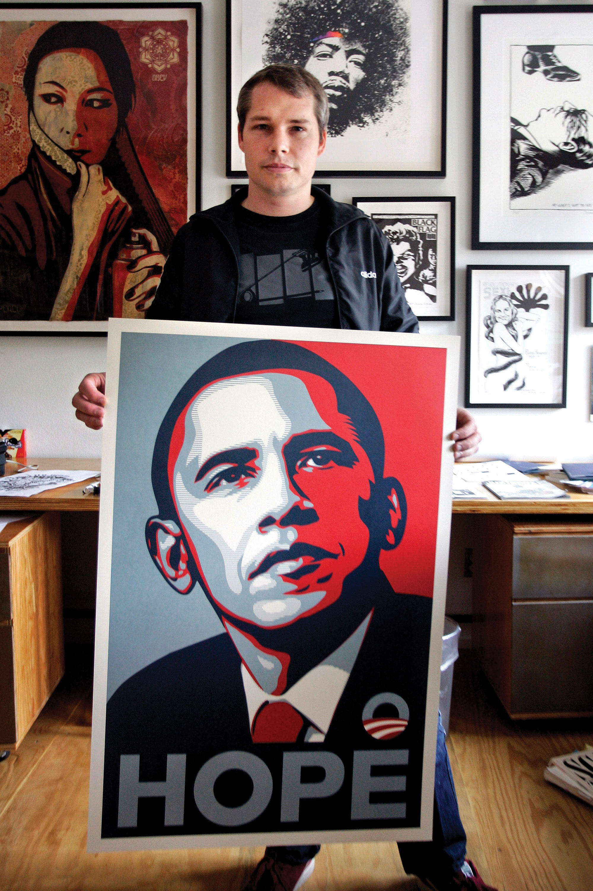
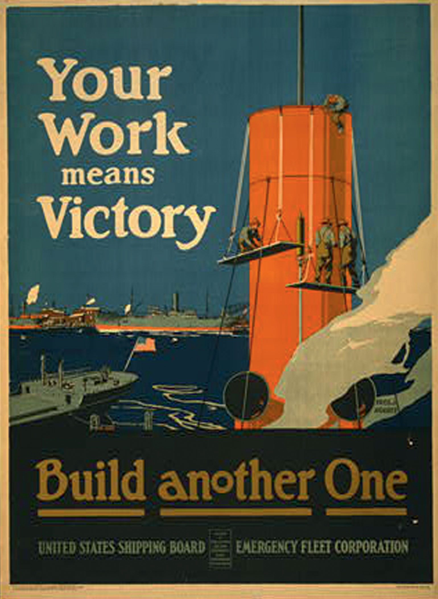

In a 1995 Wired magazine article, Jon Katz suggested that the Revolutionary War patriot Thomas Paine should be held up as “the moral father of the Internet.” The Internet, Katz wrote, “offers what Paine and his revolutionary colleagues hoped for—a vast, diverse, passionate, global means of transmitting ideas and opening minds.” In fact, according to Katz, the emerging Internet era is closer in spirit to the 18th-century media world than the 20th-century’s so-called old media (radio, television, print). “The ferociously spirited press of the late 1700s…was dominated by individuals expressing their opinions. The idea that ordinary citizens with no special resources, expertise, or political power—like Paine himself—could sound off, reach wide audiences, even spark revolutions, was brand-new to the world.”Jon Katz, “The Age of Paine,” Wired, May 1995, http://www.wired.com/wired/archive/3.05/paine.html (accessed July 15, 2010).
As we continue our introduction to understanding media and culture, Katz’s impassioned defense of Paine’s plucky independence reminds us of how cultural values shape media. Paine’s values led to his books and pamphlets that helped lead to a new nation. In all eras, cultural values shape the way media are created, used, and controlled. Keeping Katz’s words in mind, we can ask ourselves further questions about the role of cultural values in our media today. How do cultural values shape our media and mass communication? And how, in turn, do media and mass communication shape our values? We’ll start with a key American cultural value: free speech.
The value of free speech is central to American mass communication, and has been since the nation’s revolutionary founding. The U.S. Constitution’s very first amendment guarantees the freedom of speech and of the press. Thanks to the First Amendment and subsequent statutes, the United States has some of the broadest protections on speech of any industrialized nation. We can see the value that American culture places on free speech. However, speech and the press are not always free—cultural values have placed limits and those limits, like values, have shifted over time.
Obscenity, for example, has not often been tolerated. Indeed, the very definition of obscenityIndecency that goes against public morals and exerts a corrupting influence. Obscenity is not protected by the First Amendment. has shifted over time with the nation’s changing social attitudes. James Joyce’s Ulysses, ranked by the Modern Library as the best English-language novel of the 20th century, was illegal to publish in the United States between 1922 and 1934. The 1954 Supreme Court case, Roth v. The United States, tried to lessen restrictions and defined obscenity more narrowly. It allowed for differences depending on “community standards.” Obscenity became even more of an issue during the sexual revolution of the 1960s. Cultural changes of that era made it even more difficult to pin down just what was obscene and what was meant by “community standards.” Today, obscenity continues its tug-of-war with cultural values. Sexually explicit magazines, such as Playboy, are available in nearly every U.S. airport, but pornography on the Internet is still a subject of concern.
Figure 1.6
Artist Shepard Fairey, creator of the iconic Obama HOPE image, was sued by the Associated Press for copyright infringement; Fairey argued that his work was protected by the fair use exception.
Copyright lawLaw that regulates the exclusive rights given to the creator of a work. also puts limits on free speech. Here we see a conflict between cultural values of free speech and the right to protect your creative rights. Intellectual property law was originally intended to protect just that—the proprietary rights, both economic and intellectual, of the originator of a creative work. Works under copyright can’t be reproduced without the authorization of the creator, nor can anyone else use them to make a profit. Inventions, novels, musical tunes, and even phrases can all be covered by copyright law. The first copyright statute in the United States set 14 years as the maximum term for copyright protection. This number has risen exponentially in the 20th century; some works are now copyright protected for up to 120 years. In recent years, an Internet culture that enables file sharing, mixing, mash-ups, and YouTube parodies has raised questions about copyright. Can you refer to a copyrighted work? What is fair use of a copyrighted work? The exact line between what expressions are protected or prohibited by law are still being set by courts; and as the changing values of the U.S. public evolve, copyright law—like obscenity law—will continue to change as well.
Cultural values also shape mass media messages when producers of media content have vested interests in particular social goals. The producers offer media content that promotes or refutes particular viewpoints. Governments, corporations, nonprofits, colleges, indeed most organizations, all try to shape media content to promote themselves and their values. In its most heavy-handed form, at the level of government, this type of media influence can become propagandaCommunication that intentionally attempts to persuade its audience for ideological, political, or commercial purposes., communication that intentionally attempts to persuade its audience for ideological, political, or commercial purposes. Propaganda often (but not always) distorts the truth, selectively presents facts, or uses emotional appeals. In war time, propaganda often includes caricatures of the enemy.
During World War I, for example, the U.S. government created the Creel Commission to act as a sort of public relations agency for the American entry into the war. The commission used radio, movies, posters, and in-person speakers to present a positive slant on the American war effort and demonize the opposing Germans. George Creel, chairman of the commission, acknowledged the committee’s attempt at influencing the public, but he shied away from calling its work propaganda:
In no degree was the committee an agency of censorship, a machinery of concealment or repression.…In all things, from first to last, without halt or change, it was a plain publicity proposition, a vast enterprise in salesmanship, the world’s greatest adventures in advertising…We did not call it propaganda, for that word, in German hands, had come to be associated with deceit and corruption. Our effort was educational and informative throughout, for we had such confidence in our case as to feel that no other argument was needed than the simple, straightforward presentation of the facts.George Creel, How We Advertised America (New York: Harper & Brothers, 1920).
Figure 1.7
World War I propaganda posters were sometimes styled to resemble movie posters in an attempt to glamorize the war effort.
Of course, the line between the selective (but “straightforward”) presentation of the truth and the manipulation of propaganda is not an obvious or distinct one. (Another of the commission’s members was later deemed “the father of public relations” and authored a book titled Propaganda.) Advertisers craft messages so viewers want to buy their products. Some news sources, such as cable news channels or political blogs, have an explicit political slant. For our purposes, we simply want to keep in mind how cultural values shape much media content.
In 1960, journalist A. J. Liebling wryly observed that “freedom of the press is guaranteed only to those who own one.” Although he may not have put it in those terms, Liebling was talking about the role of gatekeepers in the media industry, another way in which cultural values influence mass communication. GatekeepersThe people who help determine which stories make it to the public, including reporters who decide what sources to use, and editors who pick what gets reported on, and which stories make it to the front page. are the people who help determine which stories make it to the public, including reporters who decide what sources to use, and editors who pick what gets published and which stories make it to the front page. Media gatekeepers are part of culture and thus have their own cultural values, whether consciously or unconsciously. In deciding what counts as newsworthy, entertaining, or relevant, gatekeepers use their own values to create and shape what gets presented to the wider public. Conversely, gatekeepers may decide that some events are unimportant or uninteresting to consumers. Those events may never reach the eyes or ears of a larger public.
In one striking example of how cultural values shape gatekeeping, journalist Allan Thompson points to the news media’s sluggishness in covering the Rwandan genocide in 1994. Almost one million people were killed in ferocious attacks in just 100 days. Yet, as Thompson notes, few foreign correspondents were in Africa, and the world was slow to learn of the atrocities in Rwanda. Instead, the nightly news was preoccupied by the O. J. Simpson murder trial, Tonya Harding’s attack on a fellow figure skater, or the less-bloody conflict in Bosnia (a European country, where more reporters were stationed). Thompson argues that the lack of international media attention allowed politicians to remain complacent. With little media coverage, there was little outrage about the Rwandan atrocities, which contributed to a lack of political will to invest time and troops in a faraway conflict. Richard Dowden, Africa Editor for the British newspaper The Independent during the Rwandan genocide, bluntly explained the news media’s larger reluctance to focus on African issues: “Africa was simply not important. It didn’t sell newspapers. Newspapers have to make profits. So it wasn’t important. Cultural values by gatekeepers on the individual and institutional level downplayed the genocide at a time of great crisis, and potentially contributed to the deaths of hundreds of thousands of people.”POLISMedia, “The Media and the Rwanda Genocide,” Lecture Delivered at The Crisis States Research Centre and POLIS at the London School of Economics, January 17, 2007, http://www.polismedia.org/rwandatranscript.aspx (accessed July 15, 2010).
Gatekeepers had an especially strong influence in old media, in which space and time were limited. A news broadcast could only last for its allotted half hour, 22 minutes with commercials, while a newspaper had a set number of pages to print. The Internet, in contrast, has room for infinite news reports. The interactive nature of the medium also minimizes the gatekeeper function of the media by allowing media consumers to have a voice as well. News aggregators like Digg.com allow readers to decide what makes it on to the front page. That is not to say that the wisdom or cultural values of the crowd is always wise—recent top stories on Digg have featured headlines like “Top 5 Hot Girls Playing Video Games” and “The girl who must eat every 15 minutes to stay alive.” Media expert Mark Glaser noted that the digital age hasn’t eliminated gatekeepers; it’s just shifted who they are: “the editors who pick featured artists and apps at the Apple iTunes store, who choose videos to spotlight on YouTube, and who highlight Suggested Users on Twitter,” among others. And unlike traditional media, these new gatekeepers rarely have public bylines, making it difficult to figure out who makes such decisions and on what basis.Mark Glaser, “New Gatekeepers Twitter, Apple, YouTube Need Transparent Editorial Picks,” PBS Mediashift, March 26 2009.
Observing how distinct cultures and subcultures present the same story can be indicative of those cultures’ various cultural values. Another way to look critically at today’s media messages is to examine how the media has functioned in the world and in the United States during different cultural periods.